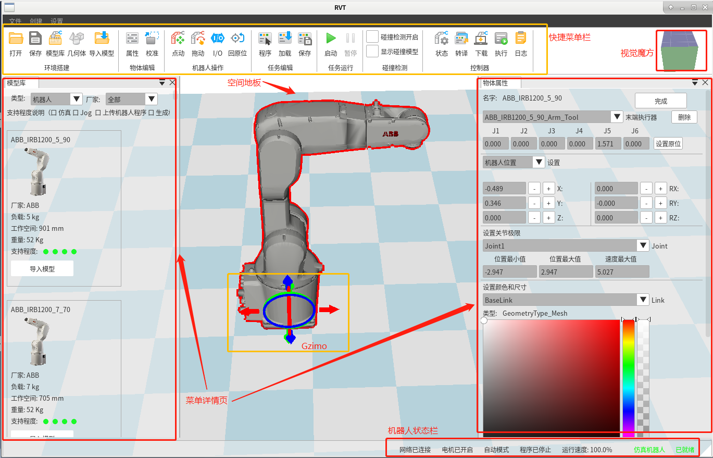
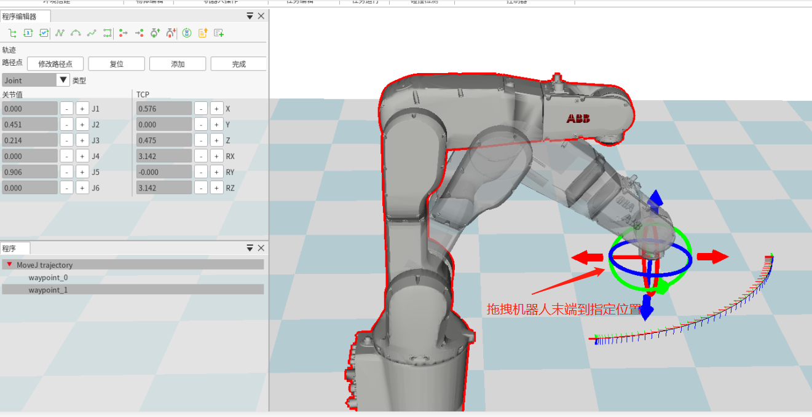

🚨 您还使用ROS或MoveIt开发机器人应用吗？
机器人开发的未来: RPCP机器人规划与控制开发平台¶
RPCP机器人规划与控制开发平台全称Robot Planning & Control Platform，提供丰富的开发模块和工具，满足绝大多数场景下的开发需求。 以其抽象统一的用户接口，降低了机器人开发门槛，加快机器人应用开发和落地速度， 实现1天入门，3天方案原理验证，平均缩短开发者80%的开发时间。 RPCP的独立性使其不依赖类似ROS等平台，用户能轻松集成到现有的机器人系统中。
 {kind=link}
{kind=link}
🚀 新一代机器人开发范式
RPCP机器人开发平台目标：通过提供机器人开发所需的模块和工具，实现机器人的“开箱即用”
MoveIt开发者的日常
稳定性差，工业场景无法接受❌
设计冗余配置复杂，使用门槛高❌
安装复杂，环境管理困难❌
默认算法失败率高，替换复杂❌
实时性不足，跨平台功能受限❌
动力学、轨迹规划等功能支持不足❌
社区维护，问题响应解决较慢❌
选择RPCP的理由
8年工业场景打磨，工业级稳定 ✔️
优化统一接口设计，1小时入门 ✔️
轻量化设计，轻松集成已有系统 ✔️
算法性能提升，保证成功率 ✔️
控制器实时伺服控制，跨平台支持 ✔️
支持动力学力控、高级轨迹规划等 ✔️
企业级服务，24小时响应问题 ✔️
主流机械臂运控深度适配 ✔️
免费方案评估，提供专业建议 ✔️
企业定制化开发助力企业产品落地 ✔️
四大核心优势¶
🚀 低门槛，速开发
RPCP优化设计机器人各模块功能接口，抽象统一硬件控制方式，开发者可实现1小时入门机器人开发，平均缩短企业80%的产品研发周期
🧠 智能规划
专业路径规划+轨迹规划技术可以快速计算出平滑且 加速度连续的轨迹，无碰撞，无奇异点
🔌 硬件广泛深度适配
Python，C++接口直接控制不同品牌机器人，支持FANUC，ABB，Motoman，UR，Franka(新款+老款)等，支持MoveJ、MoveL指令级控制，也支持 毫秒级实时伺服控制
🌐 企业级服务
24小时响应，免费方案风险评估，企业定制化方案开发
案例速览¶
ABB伺服控制端水杯

ABB伺服控制跟踪笛卡尔轨迹

ABB伺服控制跟踪关节轨迹

ABB伺服控制遥操作

FANUC伺服控制跟踪笛卡尔轨迹

FANUC伺服控制跟踪关节轨迹
{kind=link}
FANUC伺服控制遥操作

Franka伺服控制

在线避障规划

基于优化方法的避障光滑路径生成

质检飞拍机器人

快速(免)示教机器人

无序分拣机器人